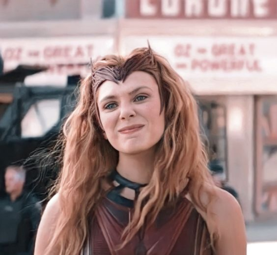

Biography

Wanda Maximoff, known as the Scarlet Witch, was born in the fictional Eastern European country of Sokovia.
She and her twin brother, Pietro (Quicksilver), were orphaned at a young age when a Stark Industries missile killed their parents. Motivated by a desire for revenge, they volunteered for experiments conducted by Hydra, which unlocked Wanda's latent mystical powers and gave Pietro super speed. Initially aligning with the villainous organization, the twins later joined the Avengers after recognizing Hydra's true nature.
Wanda's journey as a superhero was tumultuous, marked by tragedy and struggle. Her romance with the Vision, a synthezoid, added complexity to her life, especially after their children were revealed to be magical constructs.
Wanda's mental health deteriorated, leading to catastrophic events such as the "House of M" storyline, where she altered reality itself. Throughout her life, Wanda grappled with her immense powers, heritage as the daughter of Magneto, and the influence of dark magic.
Her story reached a critical point when she sought redemption by destroying all Darkholds, ancient books of dark magic, in an effort to eliminate the corrupting influence they had on the world,
ultimately striving to make amends for the chaos her powers had unleashed.
Abilities

Wanda Maximoff [Scarlett Witch] is one of the most complex and powerful characters in the Marvel Universe. Her abilities are vast and have evolved significantly over the years,
making her a formidable force among superheroes and supervillains alike. Wanda's powers are primarily rooted in chaos magic and reality manipulation, but they encompass a wide array of other abilities that make her one of the most versatile characters in the Marvel Comics universe.
At the core of Scarlet Witch's abilities is her mastery of chaos magic, which is a potent and unpredictable form of magic. This magic allows her to manipulate reality itself, bending and altering the fabric of existence to her will. This reality-warping capability is what sets her apart from many other characters in the Marvel Universe.
Wanda can reshape the world around her, change the nature of objects, alter the laws of physics, and even rewrite the history and memories of individuals. This power is not without its limits and consequences, as it often requires a great deal of concentration and emotional stability, both of which Wanda has struggled with throughout her life.
In addition to chaos magic, Scarlet Witch has a deep connection to the mystical arts. She has been trained in sorcery by some of the most powerful magic users in the Marvel Universe, including Agatha Harkness and Doctor Strange. This training has granted her the ability to cast spells, create magical barriers, and summon mystical energies. Her spellcasting can be used for a variety of purposes, such as healing, teleportation, telekinesis, and energy projection.
Wanda's telekinetic abilities allow her to move objects with her mind, create powerful force fields, and fly. She can also generate and manipulate energy, using it to create blasts that can cause significant damage to her enemies.
Wanda's connection to chaos magic also grants her the ability to affect probability and chance, often referred to as her "hex" powers. By casting hexes, she can cause unlikely events to occur, such as making weapons malfunction, causing structures to collapse, or inducing spontaneous combustion. This power can be incredibly versatile and dangerous, as it allows Wanda to turn the tide of battle in unpredictable ways.
The extent and precision of her hex powers have varied over the years, sometimes allowing for minor inconveniences and other times resulting in catastrophic changes.
One of the most significant aspects of Scarlet Witch's abilities is her potential to alter the entire fabric of reality. This was most prominently displayed during the "House of M" storyline, where Wanda, in a state of extreme emotional distress, reshaped the entire world into a new reality where mutants were the dominant species.
In this altered reality, many of her fellow superheroes and mutants had entirely different lives and histories.
Ultimately, Wanda's reality-warping abilities led to the infamous "No More Mutants" event, where she reduced the mutant population from millions to a mere few hundred with a single phrase. This act demonstrated the immense and terrifying scope of her power, showing that she could change the entire course of history and the nature of existence itself with a thought.
Wanda's powers also have a profound impact on her own psyche and mental health. The immense burden of her abilities, combined with personal tragedies and manipulation by others, has led to periods of instability and mental breakdowns.
Her powers are closely tied to her emotional state, and when she is distressed or unstable, her control over her abilities can falter, leading to unintended and often disastrous consequences. This vulnerability has made her both a sympathetic and unpredictable character, as her struggles with her powers mirror her internal battles with grief, guilt, and identity.
In addition to her magical and reality-warping abilities, Scarlet Witch possesses enhanced physical capabilities. While not on the same level as her superhuman comrades, her physical abilities are augmented by her magical nature.
She has enhanced strength, agility, and reflexes, allowing her to hold her own in physical combat. Her endurance and resilience are also heightened, enabling her to withstand significant physical and magical attacks.
Scarlet Witch's powers have also evolved over time due to various external influences and her own growth as a character. For instance, her abilities were initially thought to be mutant in origin, tied to her status as the daughter of Magneto.
However, later revelations suggested that her powers were magical in nature, stemming from a connection to an ancient source of chaos magic. This evolution has added layers of complexity to her character, as she has had to reconcile her mutant heritage with her role as a powerful sorceress.
One of the most interesting aspects of Wanda's abilities is their potential for both creation and destruction. While she can use her powers to heal, protect, and create, she can also unleash devastating destruction when pushed to her limits.
This duality reflects the broader themes of her character, as she constantly struggles to balance her desire to do good with the potential for catastrophic harm inherent in her powers. Her journey is one of redemption and self-discovery, as she seeks to understand and control her abilities while grappling with the consequences of her past actions.
Throughout her history in Marvel Comics, Scarlet Witch's abilities have made her a key player in numerous storylines and events. She has been a member of various superhero teams, including the Avengers and the X-Men, and has played pivotal roles in major crossover events. Her powers have also made her a target for villains and other powerful beings who seek to exploit or neutralize her abilities.
This constant threat has forced Wanda to develop her skills and resilience, making her one of the most formidable and resourceful characters in the Marvel Universe.
Trivia

Scarlet Witch, whose real name is Wanda Maximoff, was created by writer Stan Lee and artist Jack Kirby.
She first appeared in "X-Men" #4 in 1964. Originally, Wanda was portrayed as a villain alongside her twin brother Pietro (Quicksilver), serving as members of the Brotherhood of Evil Mutants under their father, Magneto. This early depiction was marked by Wanda's sense of loyalty to her brother and her conflicted feelings about their criminal activities.
Over time, her character evolved significantly, becoming one of the most powerful and complex figures in the Marvel Universe. Wanda and Pietro's parentage and backstory have undergone numerous retcons, adding layers of mystery and complexity to their origins. Initially thought to be mutants, it was later revealed that their powers were the result of genetic experimentation by the High Evolutionary. This revelation was part of a broader effort by Marvel to distinguish Wanda and Pietro's story from the X-Men mythos, especially given the rights issues involving different media portrayals. Despite these changes, the core of Wanda's character has remained her struggle with her identity, her powers, and her place in the world.
Relationship With Vision
One of the most iconic aspects of Scarlet Witch's story is her relationship with the Vision, a synthezoid created by Ultron. Their romance began during their time together as members of the Avengers. Despite Vision being an artificial being, their love was portrayed as genuine and deep, exploring themes of humanity, identity, and acceptance. This relationship led to marriage and the birth of their twin sons, Thomas and William. However, the nature of their children, created through Wanda's reality-altering powers, eventually led to tragedy. When it was revealed that the twins were magical constructs, their existence was undone, causing Wanda immense grief and contributing to her mental breakdown. This loss was a catalyst for several significant storylines, including "Avengers Disassembled" and "House of M."
The complex relationship between Wanda and Vision highlights the emotional depth of her character, as she navigates love, loss, and the struggle to maintain her sanity amidst her extraordinary abilities. Their story has also been adapted in various media, most notably in the Marvel Cinematic Universe (MCU) series "WandaVision," which further explores their relationship and its impact on Wanda's psyche.
House of M and Reality Warping
One of the most pivotal storylines involving Scarlet Witch is "House of M," written by Brian Michael Bendis. Following the traumatic events of "Avengers Disassembled," where Wanda's powers led to the deaths of several Avengers, she suffered a complete mental breakdown. In "House of M," Wanda's grief and instability caused her to create an alternate reality where mutants were the dominant species, and many heroes had different lives. This reality warp was her attempt to create a world where everyone could be happy, particularly herself and her family. However, when the true nature of this world was revealed, it led to a confrontation that ended with Wanda uttering the words "No more mutants," depowering the vast majority of the mutant population. This act had far-reaching consequences, significantly altering the Marvel Universe.
"House of M" not only showcased the vast extent of Wanda's powers but also highlighted the emotional and psychological toll of her abilities. It remains one of the defining moments in her character's history, emphasizing the duality of her power as both a source of potential salvation and immense destruction.
Training in Sorcery
While Scarlet Witch's powers are often associated with chaos magic and reality warping, her abilities also include extensive training in traditional sorcery. Wanda was mentored by Agatha Harkness, a powerful witch who helped her understand and control her magical abilities. This training provided Wanda with a deeper understanding of mystical forces and enhanced her spellcasting skills. Under Agatha's tutelage, Wanda learned to cast various spells, create protective barriers, and summon magical energies. This aspect of her powers added another layer of complexity to her character, blending her innate chaos magic with learned sorcery.
Wanda's connection to the mystical arts also brought her into contact with other powerful magic users in the Marvel Universe, such as Doctor Strange. Her dual nature as a mutant (initially) and a sorceress allowed her to bridge the gap between different aspects of the Marvel Universe, making her a unique and versatile character. This training has been explored in various comic book storylines and adapted into other media, including the MCU, where Agatha Harkness appears as a significant character in "WandaVision."